Cơ sở toán học cho AI
Bài 05
Trường Đại học Công nghệ
Đại học Quốc gia Hà Nội
Vấn đề trung tâm. Huấn luyện mạng từ dữ liệu hữu hạn đòi hỏi ba quyết định: cực tiểu đại lượng nào, dùng gradient thế nào với chi phí chấp nhận được, và bắt đầu từ đâu ($\theta_0$).
Chọn dự đoán chung $\theta$ để mất mát trung bình trên ba quan sát $y=(-1,1,3)$ nhỏ nhất.
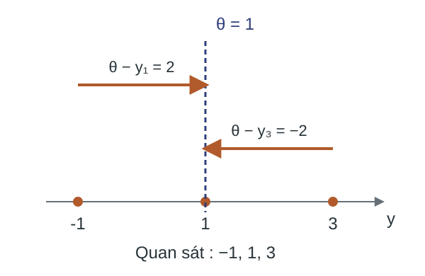
Ví dụ. Mô hình hằng $f_\theta=\theta$ với $\theta\in\mathbb R$, mất mát bình phương.
$J(\theta)=\tfrac12(\theta-1)^2+\tfrac43$: cực tiểu tại $\theta^*=1$ (trung bình mẫu), $J(\theta^*)=\tfrac43>0$.
Mô hình được dùng cho quan sát mới; dữ liệu huấn luyện chỉ là một mẫu hữu hạn.
$f_\theta:\mathbb R^d\to\mathcal Z$, $\ell:\mathcal Z\times\mathcal Y\to\mathbb R_{\ge0}$, $\theta\in\mathbb R^p$; $d,p\in\mathbb N_{>0}$: số đặc trưng, số tham số;
$\mathcal Y,\mathcal Z$: miền nhãn, miền dự đoán.
$D=\{(x_i,y_i)\}_{i=1}^N$, $N\ge1$.
$(X,Y)\sim P$; giả sử $R$ hữu hạn.
$P$ chưa biết nên $R$ không tính được. Ước lượng $R$ bằng mất mát trên dữ liệu không dùng để cập nhật tham số.
| Thời điểm | Mất mát huấn luyện | Mất mát xác thực |
|---|---|---|
| 1 | 0.30 | 0.35 |
| 2 | 0.20 | 0.42 |
Theo mất mát xác thực (số liệu giả lập), thời điểm 1 được chọn dù mất mát huấn luyện lớn hơn.
Chọn cấu hình và thời điểm lưu.
Đánh giá một lần, sau khi đã chọn xong.
Với $J$ lồi, $\nabla J(\theta)=0$ đủ cho cực tiểu toàn cục (Bài 04); mất mát của mạng nói chung không lồi.
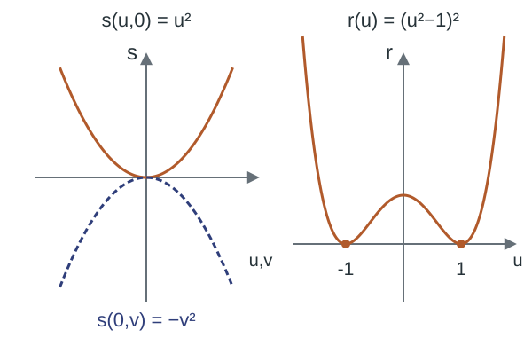
Khi $J$ không lồi, gradient bằng không chưa chứng nhận cực tiểu; nhiều cực tiểu có thể cùng giá trị.
Câu hỏi:
| Thời điểm | Mất mát huấn luyện | Lỗi xác thực |
|---|---|---|
| A | 0.24 | 0.12 |
| B | 0.18 | 0.16 |
Hạ gradient (Bài 04) cần $\nabla J(\theta_t)$ ở mọi bước: $\theta_{t+1}=\theta_t-\eta\nabla J(\theta_t)$.
Với các $\ell_i$ khả vi, đặt $g_i(\theta)=\nabla\ell_i(\theta)\in\mathbb R^p$.
Giả sử mỗi gradient mẫu tốn chi phí $C$.
| Một bước | Số gradient mẫu | Chi phí giả định |
|---|---|---|
| Đầy đủ | $N=10^6$ | $NC$ |
| Nhóm nhỏ | $b=100$ | $bC$ |
Nhóm nhỏ chỉ dùng một phần các $g_i$; tại cùng $\theta$, các $g_i$ có thể khác xa $\nabla J(\theta)$.
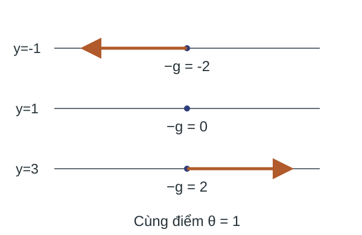
$y=(-1,1,3)$; $\ell_i=\tfrac12(\theta-y_i)^2$.
| $y_i$ | $-1$ | $1$ | $3$ |
|---|---|---|---|
| $g_i(1)$ | 2 | 0 | −2 |
Chọn chỉ số ngẫu nhiên đều để mỗi $g_i$ có cùng xác suất góp vào nhóm.
Mệnh đề. Cố định $D,\theta$; $g_i=\nabla\ell_i(\theta)\in\mathbb R^p$, $\bar g=\nabla J(\theta)$.
$b\in\mathbb N_{>0}$; $I_1,\ldots,I_b$ độc lập, đều trên $\{1,\ldots,N\}$, có hoàn lại.
Ví dụ tại $\theta=1$: $\Sigma=\tfrac13\big(2^2+0^2+(-2)^2\big)=\tfrac83$, nên $\mathbb E\widehat g=0$, $\operatorname{Var}(\widehat g)=\tfrac{8}{3b}$.
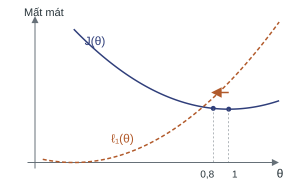
Tại $\theta=1$, mẫu được chọn có $y=-1$, $g=2$; bước học $\eta=0.1$.
Ước lượng không chệch vẫn có thể làm tăng $J$ ở một bước.
Đầu vào: $D,f,\ell$; điểm đầu $\theta_0$; cỡ nhóm $b$; bước học $\eta_t>0$; số bước tối đa $T$;
tập xác thực, số lần chờ $K_{\rm stop}$, ngưỡng cải thiện $\delta\ge0$; $b,T,K_{\rm stop}\in\mathbb N_{>0}$.
Một bước có thể làm $J$ tăng và $J$ khác $R$, nên đánh giá xác thực định kỳ và luôn lưu tham số có tiêu chí nhỏ nhất.
Đặt lại bộ đếm nếu giảm hơn $\delta$ so với giá trị tốt nhất trước lần đánh giá; nếu không, tăng một.
Dừng khi bộ đếm đạt $K_{\rm stop}$ hoặc hết $T$ bước. Đầu ra là bản lưu tốt nhất.
Từ $\operatorname{Cov}(\widehat g)=\Sigma/b$, sai số chuẩn $\sqrt{\operatorname{Var}(\widehat g)}$ của ví dụ tại $\theta=1$ bằng $\sqrt{8/(3b)}$.
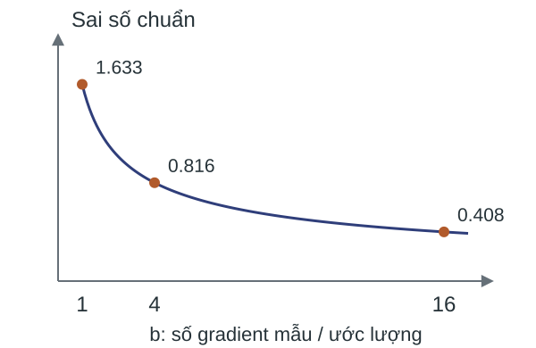
| $b$ | Phương sai | Sai số chuẩn |
|---|---|---|
| 1 | $8/3$ | 1.633 |
| 4 | $2/3$ | 0.816 |
| 16 | $1/6$ | 0.408 |
$\theta=1$ cố định; lấy mẫu độc lập đều có hoàn lại.
Chi phí tỷ lệ $b$, sai số chuẩn tỷ lệ $1/\sqrt b$, nên tăng $b$ bốn lần làm chi phí gấp bốn và sai số chuẩn giảm một nửa.
Giảm nhiễu bằng cách tăng $b$ làm tăng chi phí; giảm $\eta_t$ thu nhỏ bước ngẫu nhiên mà không thêm phép tính.
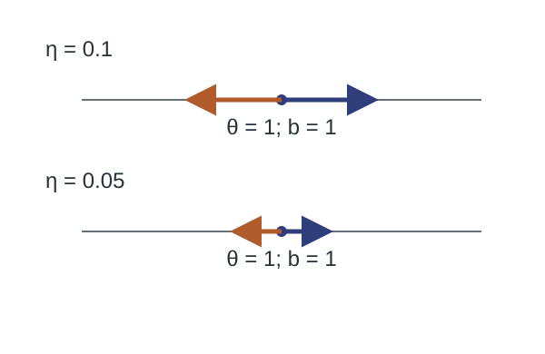
Tại nghiệm $\theta_t=1$, gradient mẫu vẫn biến thiên.
Giảm $\eta_t$ một nửa làm phương sai cập nhật giảm bốn lần.
Bước học nhỏ cũng làm giảm độ dài dịch chuyển có hướng.
Câu hỏi:
Tại $\theta=1$, lấy $b=2$ chỉ số độc lập đều có hoàn lại.
Nhóm nhận được là $y=-1$ và $y=1$; bước học $\eta=0.1$.
Tính hai gradient mẫu, gradient nhóm, tham số mới và độ thay đổi của $J$.
Tính kỳ vọng và phương sai của gradient nhóm. Nêu điều kiện của phép tính.
Gác nhiễu lấy mẫu: với gradient đầy đủ, hướng bước vẫn phụ thuộc độ cong của mất mát.
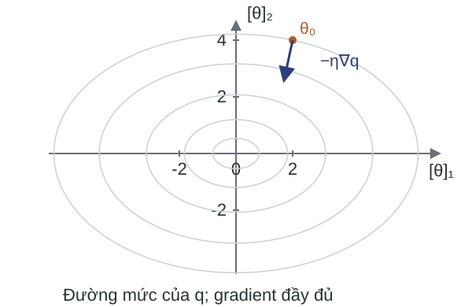
Ví dụ. $\theta\in\mathbb R^2$; $[\theta]_i$ là tọa độ thứ $i$.
$[g]_i=\lambda_i[\theta]_i$ với $\lambda_1=3,\lambda_2=7$, nên $-g_0\propto-(3,14)^T$ lệch khỏi hướng về cực tiểu $-\theta_0\propto-(1,2)^T$.
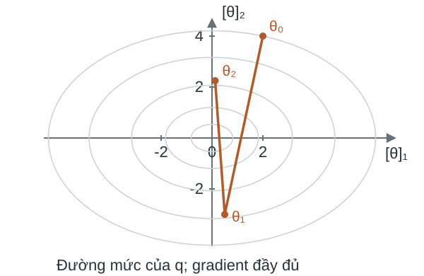
Bước hạ gradient trên $q$, với $I_2$ là ma trận đơn vị:
Với $\eta=1/4$:
Co theo cả hai hướng khi
Bước học bị chặn bởi độ cong lớn. Với $\eta=1/20$, hai hệ số là $0.85$ và $0.65$; tham số không vượt trục, nhưng hướng cong nhỏ co chậm.
Trực quan. Bước mới $v_{t+1}$ giữ phần $\beta\in[0,1)$ của bước cũ $v_t$, cộng bước âm gradient mới.
Bước học $\eta=1/20$ như trên; $\beta=1/2$, $v_0=0$, $\theta_0=(2,4)^T$.
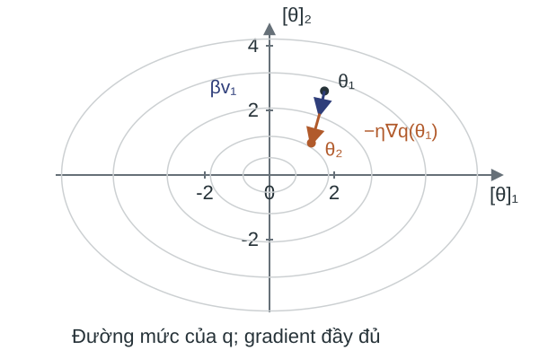
Bước đầu:
Tích lũy một nửa bước cũ:
Đầu vào: cấu hình SGD, dùng bước cố định $\eta>0$; thêm $0\le\beta<1$, $v_0=0$.
Gradient nhóm được tính tại $\theta_t$.
Với $\eta,\beta$ cố định:
Trạng thái thêm: $p$ phần tử; chi phí cập nhật thêm $O(p)$.
Theo dõi, dừng và đầu ra giữ như SGD.
Cùng $q$, $\theta_0=(2,4)^T$, $\eta=0.05$; momentum dùng $\beta=0.5$, $v_0=0$.
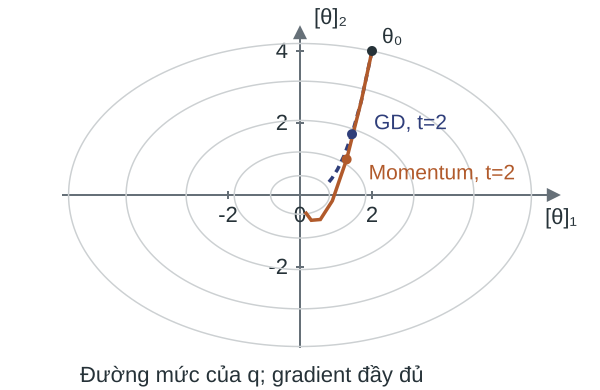
Phương pháp hạ gradient (GD) và momentum tại bước thứ hai:
| Phương pháp | $\theta_2^T$ | $q(\theta_2)$ |
|---|---|---|
| GD | (1.445, 1.69) | 13.1284 |
| Momentum | (1.295, 0.99) | 5.9459 |
Mô phỏng xác định từ hàm đã cho; sáu bước trên hình.
Khi $g$ không đổi, $v_{t+1}=-\eta\tfrac{1-\beta^{t+1}}{1-\beta}g$; hệ số của $-g$ tiến tới $\tfrac{\eta}{1-\beta}=2\eta$ với $\beta=\tfrac12$.
Momentum luôn dịch thêm $\beta v_t$; điểm $\theta_t+\beta v_t$ là nơi tham số tới trước khi hiệu chỉnh.
$\theta_1=(1.7,2.6)^T$, $v_1=(-0.3,-1.4)^T$; $\eta=0.05$, $\beta=0.5$.
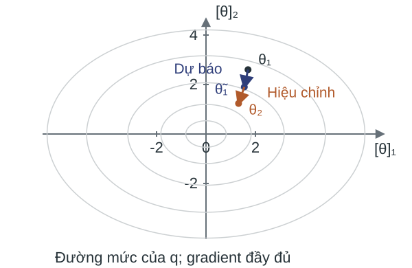
Phương pháp gradient gia tốc Nesterov (NAG), với bước cố định $\eta>0$, trạng thái $v$ và $0\le\beta<1$.
Momentum: $\theta_t$.
Nesterov: $\widetilde\theta_t=\theta_t+\beta v_t$.
Cùng nhóm $I_1,\ldots,I_b$ để đối chiếu hai quy tắc.
Đầu vào, $v_0=0$, quy tắc dừng và bản lưu như momentum; một gradient nhóm mỗi bước.
Câu hỏi:
| Đại lượng cần xác định | Momentum | Nesterov |
|---|---|---|
| Điểm đánh giá và gradient | — | — |
| Vận tốc mới và tham số mới | — | — |
Với $\eta=0.05$, $\beta=0.5$, tính các đại lượng trong bảng cho mỗi quy tắc, từ cùng trạng thái đã cho. Nêu giới hạn của kết luận so sánh sau một bước.
Mọi quy tắc cập nhật bắt đầu từ $\theta_0$. Chọn $\theta_0$ cho mạng cần biết gradient truyền qua mạng ra sao.
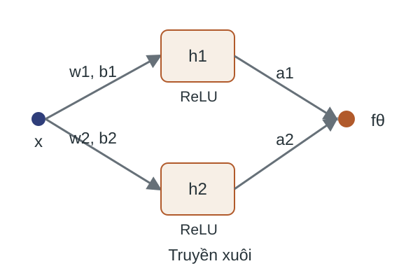
$x,y\in\mathbb R$, $j\in\{1,2\}$; sáu tham số tạo $\theta\in\mathbb R^6$.
$z_j$: tiền kích hoạt; $h_j$: kích hoạt; $\phi$: hàm tuyến tính chỉnh lưu (ReLU), $\phi(z)=\max(0,z)$.
Truyền xuôi với $x=1,y=0,w_j=a_j=1,b_j=0$ cho $z_j=h_j=1$, $f_\theta=2$, $\ell=2$.
Sai số dự đoán $e=f_\theta-y=2$; $h_j=1$, $\phi^\prime(z_j)=1$, $x=a_j=1$.
Sáu đạo hàm ở cấu hình trước đều bằng 2; một bước hạ gradient với $\eta=0.1$ cho:
| Tham số | Đơn vị 1: trước → sau | Đơn vị 2: trước → sau |
|---|---|---|
| $a_j$ | $1\to0.8$ | $1\to0.8$ |
| $w_j$ | $1\to0.8$ | $1\to0.8$ |
| $b_j$ | $0\to-0.2$ | $0\to-0.2$ |
Mệnh đề. Hai đơn vị cùng tham số vào/ra, hàm kích hoạt và trạng thái nhận cập nhật giống nhau trên cùng dữ liệu, tại các bước khả vi; mạng tương đương một đơn vị.
Nhận xét. Hoán đổi đồng thời hai nhánh và các trọng số tương ứng giữ nguyên $f_\theta$.
Thay $w_1=0.8$, $w_2=1.2$; giữ $a_j=1$, $b_j=0$, $x=1$, $y=0$.
Hai trọng số ra nhận gradient khác nhau, nên sau một bước hai trọng số ra cũng khác nhau.
Quy tắc. Lấy trọng số độc lập từ phân phối liên tục, trung bình 0; chúng khác nhau với xác suất 1. Độ lệch có thể bằng 0.
Phá đối xứng chưa xác định độ lớn trọng số; độ lớn quyết định các thừa số trong tích dây chuyền.
Mô hình tuyến tính minh họa. $h^{(l)}=c_lh^{(l-1)}$, $c_l\in\mathbb R$, $l=1,\ldots,L$; $h^{(0)}$ là đầu vào.
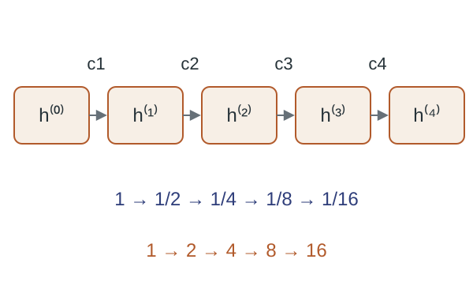
| $L=4$ | Độ nhạy |
|---|---|
| Mọi $c_l=1/2$ | $1/16$ |
| Mọi $c_l=2$ | $16$ |
Với mọi $c_l=c$, $|c|\ne1$, độ nhạy $c^L$ co hoặc phóng đại theo cấp số mũ của độ sâu.
Nếu tăng trọng số để tránh co, tiền kích hoạt sẽ lớn; với hàm bão hòa, $\phi^\prime(z)$ khi đó rất nhỏ.
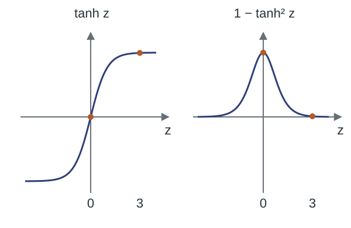
Ví dụ hàm bão hòa: $\phi(z)=\tanh z$.
| $z$ | $\phi^\prime(z)$ |
|---|---|
| 0 | 1 |
| 3 | $\approx0.00987$ |
Gần $z=0$, $\tanh z\approx z$ và $\phi^\prime\approx1$; mô hình tuyến tính ước lượng được thang khởi tạo.
Với trọng số ngẫu nhiên, độ lớn tín hiệu được đo bằng phương sai; cần giữ phương sai này qua lớp.
$z=Wh$; $h\in\mathbb R^{n_{\rm in}}$, $z\in\mathbb R^{n_{\rm out}}$, $W\in\mathbb R^{n_{\rm out}\times n_{\rm in}}$.
Giả thiết. Các $W_{ji}$ độc lập, trung bình 0, phương sai $s^2$; $W$ độc lập với $h$.
$\mathbb E h_i=0$, $\operatorname{Var}(h_i)=q>0$. Từ đây $q$ là phương sai đầu vào.
Ví dụ $n_{\rm in}=4$. $s^2=1$ cho $4q$; $s^2=\tfrac14$ cho $q$.
Mệnh đề. $\operatorname{Var}(z_j)=n_{\rm in}s^2q$.
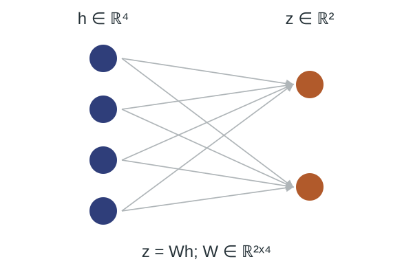
Cập nhật dùng gradient truyền ngược qua lớp; $\ell$ khả vi, phụ thuộc $h$ qua $z=Wh$.
$\delta_z=\nabla_z\ell\in\mathbb R^{n_{\rm out}}$, $\delta_h=\nabla_h\ell\in\mathbb R^{n_{\rm in}}$.
Giả thiết mô hình. Giữ phân phối $W$; $\delta_z$ độc lập với toàn bộ $W$, có thành phần trung bình 0, phương sai $r>0$.
Hệ số phương sai tiến: $4s^2$.
Hệ số phương sai lùi: $2s^2$.
| $s^2$ | Tiến | Lùi |
|---|---|---|
| $1/4$ | 1 | 1/2 |
| $1/2$ | 2 | 1 |
Khi $n_{\rm in}\ne n_{\rm out}$, không có $s^2$ giữ đồng thời hai phương sai.
Quy tắc. Thỏa hiệp giữa $1/n_{\rm in}$ và $1/n_{\rm out}$ theo số kết nối trung bình $(n_{\rm in}+n_{\rm out})/2$.
Lấy trọng số độc lập theo phân phối đều $U[-a,a]$, $a>0$, có phương sai $a^2/3$:
Hệ số phương sai tiến: $4/3$.
Hệ số phương sai lùi: $2/3$.
Mạng tuyến tính ba lớp, mỗi lớp rộng 4; đầu vào có trung bình 0, phương sai 1.
Giả thiết. Ma trận các lớp độc lập nhau và độc lập với đầu vào. Trong mỗi ma trận, trọng số độc lập, trung bình 0, cùng phương sai $s^2$.
| Phương sai trọng số | Đầu vào | Lớp 1 | Lớp 2 | Lớp 3 |
|---|---|---|---|---|
| $s^2=1/16$ | 1 | 1/4 | 1/16 | 1/64 |
| $s^2=1/4$ | 1 | 1 | 1 | 1 |
$s^2=1/16$ làm phương sai co bốn lần mỗi lớp, $s^2=1/4$ giữ nguyên; giá trị tính theo mô hình.
Câu hỏi: Hai tiểu bài toán độc lập.
$x=2,y=1$; $w_j=0.5$, $a_j=1$, $b_j=0$.
Tính hai đạo hàm $\partial\ell/\partial w_j$. Giải thích vì sao đổi nhóm dữ liệu chung không phá đối xứng tại các bước khả vi.
$z=Wh$, $n_{\rm in}=8$, $n_{\rm out}=4$.
Trọng số độc lập, trung bình 0; $W$ độc lập với đầu vào và với gradient đầu ra. Thành phần của mỗi vectơ này có trung bình 0, phương sai chung dương.
Tính $s^2$ và biên $a$ theo Glorot, cùng hai hệ số phương sai tiến/lùi. Nêu giới hạn khi áp dụng cho ReLU.
| Quyết định | Đối tượng | Đại lượng cần kiểm |
|---|---|---|
| Nguồn gradient (B) | $D,b,\widehat g_t$ | Chi phí, biến thiên |
| Quy tắc cập nhật (C) | $\theta_t,v_t$ | Trạng thái, điểm đánh giá gradient |
| Khởi tạo (D) | $\theta_0$ | Đối xứng, thang kích hoạt và gradient |
| Lựa chọn kết quả (A, B) | Xác thực, ngân sách | Bản lưu tốt nhất, điều kiện dừng |
Bốn quyết định trả lời ba câu hỏi mở đầu: cực tiểu gì, dùng gradient thế nào, bắt đầu từ đâu.
Câu hỏi:
$N=10^5$; một gradient đầy đủ vượt ngân sách.
Hai đơn vị ẩn có tham số vào/ra giống nhau; trạng thái momentum bằng 0.
Chọn cách tính gradient và nêu căn cứ. Xác định vấn đề của khởi tạo và đề xuất cách sửa.
| Thời điểm | Huấn luyện | Xác thực |
|---|---|---|
| 1 | 0.22 | 0.10 |
| 2 | 0.17 | 0.14 |
Xác định bản lưu theo lỗi xác thực.
Tiểu bài toán độc lập trong $\mathbb R^2$: $\theta=(1,1)^T$, $v=(-0.2,0.2)^T$, $\beta=0.5$. Tính điểm đánh giá gradient Nesterov.
| Câu hỏi | Kết quả | Giới hạn |
|---|---|---|
| Cực tiểu gì | $J$ để cập nhật; chọn bản lưu theo xác thực | $J$ nhỏ chưa kéo theo $R$ nhỏ |
| Dùng gradient thế nào | $\widehat g$ không chệch, hiệp phương sai $\Sigma/b$ (lấy đều, độc lập); momentum, Nesterov | Không bảo đảm giảm $J$ mỗi bước |
| Bắt đầu từ đâu | Trọng số ngẫu nhiên; thang Glorot | Suy dưới mô hình tuyến tính, độc lập |
Goodfellow, Bengio, Courville (2016), Deep Learning: §§8.1–8.4.
Kiến thức nền: §5.9, §6.5. Bài 06: §§8.5–8.7.